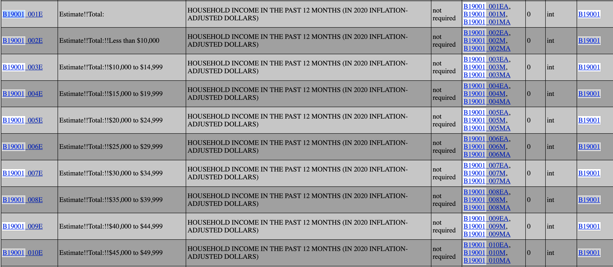

# from census import Census
# import polars as pl
# c = Census("YOUR ACCESS KEY")
# # Total Numbers of Household for total household income
# total = c.acs5.state_county_blockgroup(('NAME', 'B19001_001E'), '16', '*', Census.ALL, year=2020)
# # Print the retrieved data
# #for row in data:
# # print(row)
# df_total = pd.DataFrame(total)
# # Rename columns
# df_total = df_total.rename(columns={'NAME': 'Geography Group', 'B19001_001E': 'Total Numbers of Household', 'state': 'Idaho', 'county':'County', 'tract':'Tract', 'block group':'Block Group'})
# # Display the DataFrame
# df_totalUS Census has provided a lot of great data resources on topics like American population, places, and economy. These data can be used for data analysis projects and even training data for machine learning models. In this post, I’ll walk through the steps to pulling data from its API.
Request Access Key
First, we need to request an access key from this website. Fill out your information and once submitted, an email will be sent shortly to your email with an unique key. This key can be reused so remember to save it somewhere else.
After getting your key, we are ready to access data from the API.
Find Data Table
There are a couple of ways to find the data you want. You can go to the census data website to browse all provided tables there. Use the search bar to find what you want or if you already know what table you are looking for, you can type it in directly. For example, I want to collect the household income in 2020 from the American Community Survey. I then find the corresponding table number and head to this database page.
Hint: Table name should be the 6-digit Number. If you are not sure, you can also find it from the Notes tab.
On census’s database page, use ctrl+f to find your table. Right click variables and use your table name to find the data. In my case, it is B19001.

In this household income table, different codes represent different income gropus; therefore, I want to pull all of them so I can have the entire data set.
Connect to Census API
Here comes the most important part, connecting to and download the data! First, make sure you download and import the census library.
This code block pulls the B19001_001E column, which is the total number of household from all income groups. Since I want to have data for other income groups as well, I wrote a function (with the help of ChatGPT of course) to handle this.
# def get_income_group_data(year, income_min, income_max, state_code='16', county_code='*'):
# # Retrieve data for the specified income group
# group_data = c.acs5.state_county_blockgroup(('NAME', f'B19001_{income_min:03d}E'), state_code, county_code, Census.ALL, year=year)
# # Convert data to DataFrame
# df_group = pl.DataFrame(group_data)
# # Rename columns for better readability
# df_group = df_group.rename({'NAME': 'geography_group', f'B19001_{income_min:03d}E': 'total_numbers_of_household', 'state': 'idaho', 'block group':'block_group'})
# return df_group# df_total = get_income_group_data(2020, 1, 2) # Income Group: total
# df_10k_less = get_income_group_data(2020, 2, 3) # Income Group: less than $10,000
# df_10k = get_income_group_data(2020, 3, 4) # Income Group: $10,000 - $14,999
# df_15k = get_income_group_data(2020, 4, 5) #Income Group: $15,000 - $19,999
# df_20k = get_income_group_data(2020, 5, 6) # Income Group: $20,000 - $24,999
# df_25k = get_income_group_data(2020, 6, 7) # Income Group: $25,000 - $29,999
# df_30k = get_income_group_data(2020, 7, 8) # Income Group: $30,000 - $44,999
# df_35k = get_income_group_data(2020, 8, 9) # Income Group: $35,000 - $39,999
# df_40k = get_income_group_data(2020, 9, 10) # Income Group: $40,000 - $44,999
# df_45k = get_income_group_data(2020, 10, 11) # Income Group: $45,000 - $49,999, Idaho
# df_50k = get_income_group_data(2020, 11, 12) # Income Group: $50,000 - $59,999, Idaho
# df_60k = get_income_group_data(2020, 12, 13) # Income Group: $60,000 - $74,999
# df_75k = get_income_group_data(2020, 13, 14) # Income Group: $75,000 - $99,999
# df_100k = get_income_group_data(2020, 14, 15) # Income Group: $100,000 - $124,999
# df_125k = get_income_group_data(2020, 15, 16) # Income Group: $125,000 - $149,999
# df_150k = get_income_group_data(2020, 16, 17) # Income Group: $150,000 - $199,999
# df_200k = get_income_group_data(2020, 17, 18) # Income Group: $200,000+Combine All Datasets
After pulling all data from each income group, I created a new column to lable the groups before appending them. I use polars for data wrangling. It is a fairly new library similar to pandas but it is more efficient. I’ll introduce it more in the future. Here, I used with_columns() to create a new column. pl.lit() represents a literal value.
# create a new column in each data set to indicate its income group
# df_10k_less = df_10k_less.with_columns(
# income_group = pl.lit('10,000 less')
# )
# df_total = df_total.with_columns(
# income_group = pl.lit('total')
# )
# df_10k = df_10k.with_columns(
# income_group = pl.lit('10,000-14,999')
# )
# df_15k = df_15k.with_columns(
# income_group = pl.lit('15,000-19,999')
# )
# df_20k = df_20k.with_columns(
# income_group = pl.lit('20,000-24,999')
# )
# df_25k = df_25k.with_columns(
# income_group = pl.lit('25,000-29,999')
# )
# df_30k = df_30k.with_columns(
# income_group = pl.lit('30,000-34,999')
# )
# df_35k = df_35k.with_columns(
# income_group = pl.lit('35,000-39,999')
# )
# df_40k = df_40k.with_columns(
# income_group = pl.lit('40,000-44,999')
# )
# df_45k = df_45k.with_columns(
# income_group = pl.lit('45,000-49,999')
# )
# df_50k = df_50k.with_columns(
# income_group = pl.lit('50,000-59,999')
# )
# df_60k = df_60k.with_columns(
# income_group = pl.lit('60,000-74,999')
# )
# df_75k = df_75k.with_columns(
# income_group = pl.lit('75,000-99,999')
# )
# df_100k = df_100k.with_columns(
# income_group = pl.lit('100,000-124,999')
# )
# df_125k = df_125k.with_columns(
# income_group = pl.lit('125,000-149,999')
# )
# df_150k = df_100k.with_columns(
# income_group = pl.lit('150,000-199,999')
# )
# df_200k = df_100k.with_columns(
# income_group = pl.lit('200,000+')
# )After creating columns for each data set, I use concat() to append them all into a new data set. concat() is used to combine all DataFrames, LazyFrames, and Series. For the how parameter, the options include: vertical’, ‘vertical_relaxed’, ‘diagonal’, ‘diagonal_relaxed’, ‘horizontal’, ‘align’.
# # combine all rows together
# df_all_income_group = pl.concat(
# [
# df_10k_less,
# df_10k,
# df_15k,
# df_20k,
# df_25k,
# df_30k,
# df_35k,
# df_40k,
# df_45k,
# df_50k,
# df_60k,
# df_75k,
# df_100k,
# df_125k,
# df_150k,
# df_200k,
# df_total
# ],
# how="vertical",
# )Conclusion
I hope this tutorial helps you figure out how to connect to the census api and download the data you need. After getting the data, you’ll need to clean or transform them to a better format but this should give you a great start.